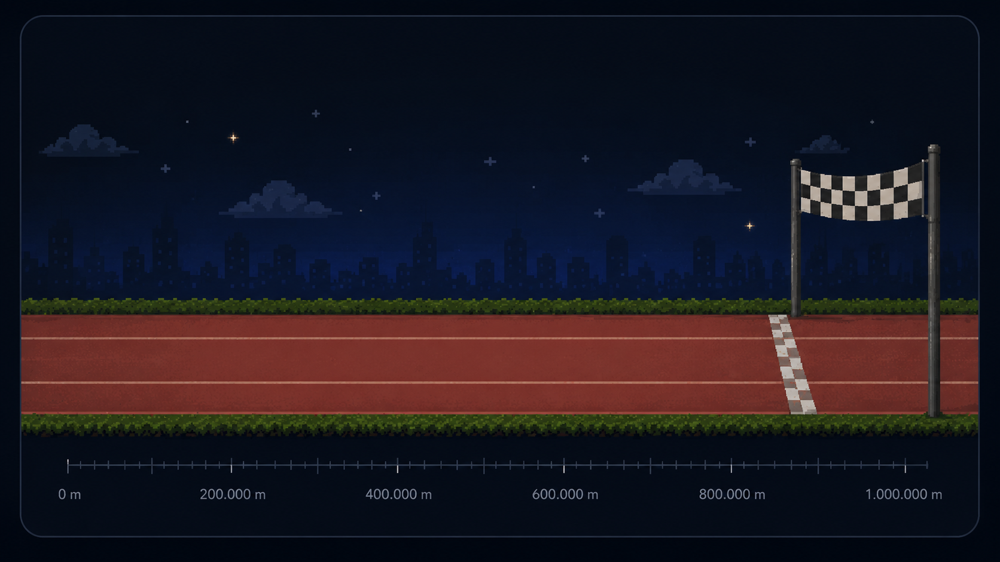

Resumen final
La lectura esencial en una pantalla
Datos oficiales ONPE para lo contabilizado. El modelo usa proyección territorial para Perú y Datum solo si queda extranjero pendiente.
Lectura rápida
Lo que debe entender el lector
Visual principal
Carrera hacia la meta
Avance por actas contabilizadas y separación visual según la ventaja ajustada. Los números exactos se muestran arriba.
🏁 Último corte
Carrera hacia la meta
Render dinámico desde data/report-data.json
Cargando...

Keiko
Sánchez
Cargando explicación visual...
Mapa territorial
Dónde se sostiene el margen
Mapa regional interactivo con el aporte territorial a la diferencia proyectada.
Mapa regional
Toca una región para ver su detalle.
GeoJSON + ONPE
Evolución
Cómo se consolidó el escenario
Todos los cortes válidos del historial, con tendencia de ventaja ONPE y ventaja ajustada.
Ver tabla completa de cortesIncluye todos los cortes válidos del historial.
Seguridad matemática
Prueba extrema del extranjero pendiente
La pregunta clave: qué ocurre si todo el extranjero pendiente se asigna a Sánchez.
Extranjero
El extranjero pendiente frente al umbral
Cargando lectura del extranjero...
Ver cálculo del umbral extranjeroONPE extranjero contado + faltante estimado.
Comparación contra el umbral
Cargando cálculo...
Auditoría técnica
Todo lo técnico, plegado
Metodología, cambios, sensibilidad, tablas y descargas quedan disponibles sin saturar la lectura principal.
Metodología resumidaCómo se calculó el escenario.
ONPE contado
Se usan votos y actas oficiales ya contabilizados.
Perú territorial
Cargando fuente de proyección...
Extranjero
Cargando método extranjero...
Actualización del informe: Cargando información de actualización...
Advertencia: este informe no proclama resultados. Es una lectura analítica; la fuente oficial final es ONPE/JNE.
Cambios frente al corte anteriorAuditoría rápida entre cortes.
Sensibilidad del volumen extranjeroEscenarios opcionales.
Tabla provincial completaDetalle fino de la proyección Perú.
Tabla regional complementariaResumen tabular del mapa.
Descargas